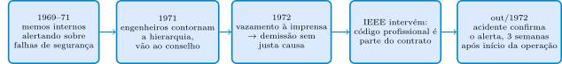
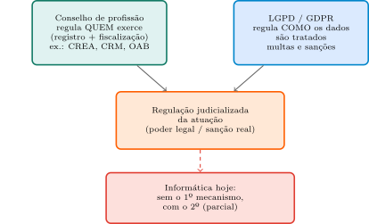
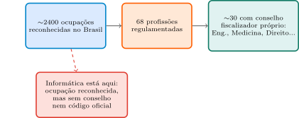
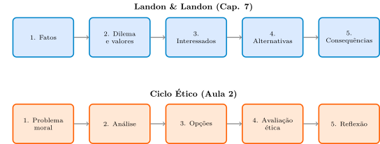

Aula 3: Computação, Seus Domínios e Responsabilidade Profissional
Computação e Sociedade
1 BART — um código que não protegeu quem o seguiu
As duas primeiras aulas construíram um vocabulário conceitual — sistema sociotécnico, mapa de atores, teorias éticas, o Ciclo Ético. Mas nenhuma delas perguntou: como a profissão, como instituição, tenta traduzir tudo isso em regras do dia a dia? A resposta usual é um código de conduta. Este caso mostra, de cara, que a resposta não é simples.
Em março de 1972, três engenheiros do Bay Area Rapid Transport Project (BART), na Califórnia — responsáveis pelo projeto de um sistema de trens automatizados —, foram demitidos.
“These engineers had been expressing their doubts about the safety of the system via internal memos since 1969 to their managers. The response was ‘don’t make trouble.’” (p. 32)
Em 1971, contornando a hierarquia direta, levaram suas preocupações a membros do conselho diretor. Dois dias depois, a história vazou para a imprensa (Contra Costa Times). Os três negaram envolvimento a princípio; quando confirmado, foram demitidos sem justa causa e sem direito a recurso.
O IEEE (Institute of Electrical and Electronic Engineers) interveio com uma carta amicus curiae ao tribunal:
“The letter emphasized the fact that according to the IEEE’s professional code, engineers are responsible for the ‘safety, health and welfare of the public.’ The IEEE also argued that the professional code is an implicit aspect of the employment contract.” (p. 33)
O argumento do IEEE era engenhoso: se o código profissional é parte implícita do contrato de trabalho, agir de acordo com ele não poderia ser motivo de demissão. O tribunal não aceitou o argumento dessa forma. E o desfecho é o ponto que abre a aula:
“After the three engineers had lost their job, their concerns were decisively confirmed on October 2, 1972, three weeks after BART began carrying passengers. There was a train system accident and several passengers were injured. Despite this, the three engineers accepted an out-of-court settlement reported to be $25,000 per person.” (p. 33)

Se seguir o código profissional não protegeu quem o seguiu — os três engenheiros ainda perderam o emprego —, para que serve, afinal, um código de conduta? É a pergunta que estrutura o resto da aula: o que um código pode fazer (Bloco 2); quais estruturas dão — ou deixam de dar — força real a um código (Blocos 3 e 4); e o que nenhuma dessas estruturas consegue garantir, mesmo quando existem (Bloco 5).
2 Os Códigos de Conduta, Concretamente
Van de Poel & Royakkers (2011, §2.2, p. 33) definem:
“Codes of conduct are codes in which organizations lay down guidelines for responsible behavior of their members. […] For engineers, two types of codes of conduct are especially important: professional codes that are formulated by professional associations of engineers and, corporate codes of conduct that are formulated by companies in which engineers are employed.” (p. 33)
O IEEE, no caso BART, é um exemplo de código profissional — formulado por uma associação, não pela empresa empregadora. Essa distinção importa: um código corporativo é escrito por quem também é parte interessada na relação de trabalho; um código profissional, em tese, não.
Códigos profissionais reais tendem a cobrir três domínios (p. 38): integridade e competência profissional, obrigações para com empregadores e clientes, e responsabilidade perante o público e a sociedade. Alguns exemplos concretos, para tornar isso menos abstrato — um aquecimento antes de entrarmos nos dois códigos específicos de computação:
“Engineers shall perform services only in the areas of their competence. (NSPE Code of conduct)” (p. 39)
“Engineers shall maintain their relevant competences at the necessary level and only undertake tasks for which they are competent. (FEANI)” (p. 39)
“Engineers shall hold paramount the safety, health, and welfare of the public. (NSPE Code of conduct)” (p. 40)
“Engineers are encouraged to adhere to the principles of sustainable development in order to protect the environment for future generations. (NSPE Code of conduct)” (p. 40)
2.1 E computação, especificamente?
A Informática não tem, no Brasil, um conselho profissional que formule um código oficial único — como o CREA faz para engenharia (voltamos a isso no Bloco 3). Maciel & Viterbo (2020, Cap. 7) são diretos sobre isso:
“Sabemos então o que faz um profissional de Computação, mas esta profissão ainda não é reconhecida oficialmente no Brasil, e isso significa entre outras coisas que não há um código de ética profissional formal para guiar a conduta destes profissionais.” (p. 199)
O que existe, em vez disso, são dois códigos de adesão voluntária, de entidades internacionais — bem mais desenvolvidos e específicos do que as cláusulas isoladas de NSPE/FEANI que acabamos de ver:
“Algumas organizações ligadas à área de Computação no mundo, tais como a Association for Computing Machinery (ACM) e o Institute of Electric and Electronic Engineers (IEEE-CS), desenvolveram projetos para criação de códigos de ética unificados. […] O código de ética da ACM é mais geral e abrange também profissionais que atuam em hardware, infraestrutura e redes de computadores. […] Já o código de ética da IEEE-CS/ACM foi proposto em conjunto pelas duas entidades, e é voltado para a Engenharia de Software.” (p. 199)
Vale a pena entrar no conteúdo real desses dois códigos — não só na sua existência — porque é aí que aparece a diferença entre um princípio abstrato (“seja honesto”) e uma cláusula que de fato orienta uma decisão técnica concreta.
2.2 O Código de Ética da ACM
O ACM Code of Ethics and Professional Conduct (2018) organiza suas cláusulas em três partes — a mesma lógica de “domínios” que já vimos em NSPE/FEANI, só que mais elaborada:
| Parte | O que cobre |
|---|---|
| 1. Princípios éticos gerais | Valores morais amplos, válidos para qualquer profissional de computação |
| 2. Responsabilidades profissionais | Padrões de qualidade, competência e conduta no trabalho técnico |
| 3. Princípios de liderança profissional | Obrigações específicas de quem gerencia pessoas ou sistemas |
Uma seleção de cláusulas, cada uma com um exemplo de “na prática” — o texto oficial completo tem mais itens do que os listados aqui:
“1.1 Contribute to society and to human well-being, acknowledging that all people are stakeholders in computing.”
Na prática: ao decidir lançar uma funcionalidade, considerar também quem não é usuário direto mas é afetado por ela — um algoritmo de recomendação que amplifica desinformação afeta a sociedade, não só quem clica.
“1.4 Be fair and take action not to discriminate.”
Na prática: testar um sistema de crédito ou de triagem de currículos quanto a taxas de erro desiguais entre subgrupos, não só quanto à acurácia agregada.
“2.1 Strive to achieve high quality in both the processes and products of professional work.”
Na prática: não lançar uma versão sabendo que a cobertura de testes é insuficiente, só para cumprir um prazo de marketing.
“2.2 Maintain high standards of professional competence, conduct, and ethical practice.”
Na prática: reconhecer os limites do próprio conhecimento — não implementar sozinho um sistema de criptografia sem revisão de quem tem essa especialidade.
“2.5 Give comprehensive and thorough evaluations of computer systems and their impacts, including analysis of possible risks.”
Na prática: documentar explicitamente a taxa de erro por subgrupo demográfico de um sistema de reconhecimento facial antes de o vender, não escondê-la.
“3.4 Articulate, apply, and support policies and processes that reflect the principles of the Code.”
Na prática: um tech lead que institui revisão de código obrigatória e um canal seguro para levantar preocupações éticas do time, não deixa isso só à boa vontade individual.
“3.7 Recognize and take special care of systems that become integrated into the infrastructure of society.”
Na prática: tratar um sistema de pagamento nacional (ex.: Pix) ou uma infraestrutura de identificação digital com um padrão de cuidado mais alto do que um aplicativo de nicho — porque a falha, aqui, afeta a sociedade em escala.
Fonte: texto oficial do ACM Code of Ethics and Professional Conduct (2018) — fonte primária, não uma citação literal dos livros-texto da disciplina (que mencionam a existência do código, mas não enumeram suas cláusulas). Ver _01-fontes.md, Fonte 5.
2.3 O Código IEEE-CS/ACM (Engenharia de Software)
O Software Engineering Code of Ethics and Professional Practice, proposto conjuntamente pelo IEEE Computer Society e pela ACM, organiza suas obrigações em 8 princípios, cada um com um único enunciado central:
“PUBLIC — Software engineers shall act consistently with the public interest.”
Na prática: é exatamente o princípio que os engenheiros do BART invocaram — segurança pública acima da conveniência do empregador.
“CLIENT AND EMPLOYER — Software engineers shall act in a manner that is in the best interests of their client and employer, consistent with the public interest.”
Na prática: atender aos interesses do cliente, mas nunca a ponto de violar a segurança pública — não é coincidência que PUBLIC venha primeiro na lista.
“PRODUCT — Software engineers shall ensure that their products and related modifications meet the highest professional standards possible.”
Na prática: não entregar um software com falhas de segurança conhecidas sem documentá-las e sem plano de correção.
“JUDGMENT — Software engineers shall maintain integrity and independence in their professional judgment.”
Na prática: recusar-se a assinar uma avaliação técnica favorável a um sistema que se julga inseguro, mesmo sob pressão da gerência.
“MANAGEMENT — Software engineering managers and leaders shall subscribe to and promote an ethical approach to the management of software development and maintenance.”
Na prática: um gestor que reserva tempo de cada ciclo de desenvolvimento para lidar com dívida técnica de segurança, não só para funcionalidades novas.
“PROFESSION — Software engineers shall advance the integrity and reputation of the profession consistent with the public interest.”
Na prática: relatar uma vulnerabilidade grave de forma responsável (disclosure coordenado), em vez de simplesmente ignorá-la para não expor a empresa.
“COLLEAGUES — Software engineers shall be fair to and supportive of their colleagues.”
Na prática: dar crédito correto a quem propôs uma solução numa revisão de código, e revisar o trabalho de colegas de forma objetiva.
“SELF — Software engineers shall participate in lifelong learning regarding the practice of their profession and shall promote an ethical approach to the practice of the profession.”
Na prática: dedicar tempo contínuo a aprender novas práticas de segurança e qualidade, não estagnar na competência adquirida na formação inicial.
Fonte: texto oficial do IEEE-CS/ACM Software Engineering Code of Ethics and Professional Practice (1999) — fonte primária; Van de Poel & Royakkers cita apenas o preâmbulo do código (p. 62), sem enumerar os 8 princípios. Ver _01-fontes.md, Fonte 6.
2.4 Voltando à taxonomia
Agora que vimos conteúdo real — NSPE, FEANI, ACM, IEEE-CS/ACM —, cabe a distinção que organiza tudo isso: os códigos servem a três objetivos possíveis, raramente excludentes entre si, mas com ênfases diferentes:
| Tipo | Objetivo |
|---|---|
| Aspiracional | Expressar valores morais da profissão/empresa ao mundo externo |
| Consultivo (advisory) | Ajudar profissionais a exercer julgamento moral em situações concretas |
| Disciplinar | Garantir que o comportamento de todos atenda a certas normas |
“Most professional codes for engineers are advisory. […] Corporate codes of conduct are more often disciplinary.” (p. 34, parafraseado do texto ao redor da definição)
Classificando o que acabamos de ler: os quatro códigos citados (NSPE, FEANI, ACM, IEEE-CS/ACM) são todos, na prática, consultivos — ajudam o julgamento, orientam decisões concretas — mas nenhum deles é disciplinar de fato, no sentido de garantir, com força institucional, que todo profissional os cumpra. Isso não é uma falha de redação: é uma limitação estrutural. O que falta é exatamente o que o próximo bloco examina — uma estrutura institucional com poder de fiscalizar e, se necessário, impedir o exercício da profissão por quem os viola.
3 Formas Judicializadas de Regular a Atuação
Nenhum dos quatro códigos do Bloco 2 é disciplinar de fato. O que faria essa diferença? Duas respostas — mecanismos diferentes, mas com o mesmo tipo de “dente”: poder legal, não só moral.
3.1 O que um conselho de profissão de fato faz
Maciel & Viterbo já adiantaram a peça que falta:
“Estes códigos são elaborados pelos respectivos Conselhos que representam e fiscalizam o exercício de cada profissão. Por exemplo, o CREA é o Conselho Regional de Engenharia e Agronomia, e o CRM é o Conselho Regional de Medicina.” (p. 199)
Um conselho como o CREA, o CRM ou a OAB faz três coisas: registra profissionais, fiscaliza o exercício da profissão, e tem poder legal de impedir quem não é registrado de exercer. É esse terceiro elemento — poder legal de exclusão — que falta a qualquer código puramente voluntário. A Lei 5.194/1966, que regulamenta a engenharia no Brasil, mostra como isso funciona na prática:
“Art. 6º Exerce ilegalmente a profissão de engenheiro, arquiteto ou engenheiro-agrônomo: a) a pessoa física ou jurídica que realizar atos ou prestar serviços públicos ou privados reservados aos profissionais de que trata esta lei e que não possua registro nos Conselhos Regionais; […]” (p. 144)
Isso é o que torna um código disciplinar de fato: sem essa lei e sem o CREA por trás dela, “disciplinar” no papel do código de ética da engenharia não teria força nenhuma — ficaria no mesmo nível dos códigos do Bloco 2.
3.2 LGPD e GDPR: uma segunda forma de regulação judicializada
O livro-texto já registra a existência de uma lei brasileira de proteção de dados, dentro de uma discussão mais ampla sobre requisitos de e-democracia:
“Propriedade e privacidade de dados: isso representa o compromisso na proteção da propriedade dos dados individuais contra o uso não autorizado por empresas e mesmo pelo governo […]. A União Européia colocou em vigor a Regulamentação Geral de Proteção aos Dados (GDPR) em maio de 2018. No Brasil, uma lei semelhante também foi aprovada no Senado, em agosto de 2018. A lei n° 13.709/2018, também chamada de Lei Geral de Proteção de Dados (LGPD) garantirá ao cidadão maior controle e rastreabilidade quanto ao uso dos seus dados pessoais tanto por entes governamentais quanto privados.” (Maciel & Viterbo, 2020, Vol. 2, Cap. 12, p. 111)
A LGPD e o GDPR são outra forma de regulação judicializada da atuação em computação — mas por um mecanismo diferente do conselho de profissão. Em vez de licenciar quem pode exercer, a lei regula diretamente como a atuação deve ocorrer: qualquer pessoa ou organização pode tratar dados pessoais, mas só de certas formas, com multas e sanções reais como mecanismo de força — o análogo funcional do “poder legal” do conselho.

Os seis grupos de princípios do Art. 6º da LGPD, cada um com um exemplo prático:
- Finalidade: “realização do tratamento para propósitos legítimos, específicos, explícitos e informados ao titular” — não coletar dados “para o caso de precisar depois”.
- Adequação e Necessidade: “limitação do tratamento ao mínimo necessário para a realização de suas finalidades” — um app de entrega não precisa do histórico completo de localização do usuário fora do horário de uma entrega ativa.
- Livre Acesso e Transparência: “consulta facilitada e gratuita […] informações claras, precisas e facilmente acessíveis” — não esconder em 40 páginas de termos de uso o que é feito com o dado.
- Segurança e Prevenção: “medidas técnicas e administrativas aptas a proteger os dados pessoais […] para prevenir a ocorrência de danos” — criptografia e controle de acesso não são “custo evitável”, são obrigação.
- Não Discriminação: “impossibilidade de realização do tratamento para fins discriminatórios ilícitos ou abusivos” — um modelo de crédito não pode usar um proxy de dado sensível (ex.: CEP como proxy de raça) para negar acesso.
- Responsabilização: “demonstração […] da adoção de medidas eficazes e capazes de comprovar a observância […] das normas” — não basta cumprir; é preciso conseguir provar que cumpriu.
(Lei 13.709/2018, Art. 6º — fonte primária/legal, não citação literal dos livros-texto.)
Uma checklist prática — material do professor, não citação literal de nenhuma fonte — para levar para qualquer sistema que colete dados pessoais:
- Para que finalidade específica este dado está sendo coletado — e é só esse dado, ou mais do que o necessário para essa finalidade?
- O titular teria como saber, em linguagem simples, o que está sendo feito com o dado dele — sem precisar ler um documento jurídico?
- Se este dado fosse exposto num incidente de segurança, que dano concreto isso causaria a uma pessoa real?
- Existe algum atributo, direto ou substituto (proxy), que poderia fazer o sistema discriminar um grupo sem que isso fosse a intenção?
- Se um órgão fiscalizador pedisse provas de conformidade hoje, a equipe conseguiria demonstrá-las, ou só afirmá-las?
3.3 Conselho e LGPD: dois mecanismos, um gênero
| Conselho de profissão | LGPD / GDPR | |
|---|---|---|
| O que regula | Quem pode exercer a profissão | Como os dados devem ser tratados |
| A quem se aplica | Só quem exerce a profissão regulamentada | Qualquer pessoa ou organização que trate dados pessoais |
| Mecanismo de força | Impedir o exercício por quem não é registrado | Multas e sanções administrativas |
| A Informática tem isso hoje? | Não | Sim, parcialmente |
O elo com o Bloco 2 fica completo: a Informática não tem, hoje, um conselho que torne disciplinar nenhum de seus códigos voluntários — mas já tem, desde 2018, uma lei geral que constrange sua atuação em pelo menos uma dimensão concreta (tratamento de dados pessoais). Regulação judicializada parcial, por um dos dois mecanismos, não pelo outro. Prepara o terreno para o Bloco 4: e a regulamentação da profissão como um todo — isso deveria existir?
4 Regular ou Não a Informática — no Brasil e no Mundo
Já vimos o que um conselho faz (Bloco 3) e que a Informática não tem um. Quando essa ausência se tornou uma questão relevante — e como o Brasil se compara com o resto do mundo nessa escolha?
Primeiro, um pouco de contexto sobre como a área se formou no país:
“A Computação na Universidade no Brasil tem uma história bem curta. Mesmo a tecnologia de computadores eletrônicos digitais começou apenas próxima à metade da década de 1940.” (Maciel & Viterbo, 2020, p. 12)
“Os primeiros Bacharelados na área foram criados no final da década de 60 […]. Em 1968 foi criado na UFBA […] o Bacharelado em Processamento de Dados, o primeiro curso de graduação na área de Computação oferecido no país […]. Em 1969, a Unicamp […] criou seu curso de Bacharelado em Ciência da Computação.” (pp. 16–17)
“Pelas estatísticas oficiais do MEC […] ao final de 2016 existia um total de 1288 cursos de graduação na área de Computação […], nos quais ingressaram 133.111 alunos naquele ano, com 42.012 concluintes.” (p. 17)
De uma área quase inexistente em 1950 para mais de mil cursos em 2016 — um crescimento rápido o suficiente para que a questão da regulamentação profissional se tornasse relevante já nos anos 1970:
“Na década de 70, apenas 20 anos após a chegada dos primeiros computadores ao Brasil, a Informática Brasileira já estava consolidada […]. Esse é o cenário no qual surgiram os movimentos para regulamentação da profissão de Informática, a exemplo de outras profissões liberais, como as dos médicos, engenheiros e advogados.” (Cap. 5, p. 143)
Mas o Brasil regula profissões de forma mais rara do que a intuição sugere:
“A regra prevalente no País sempre foi a da liberdade do exercício profissional para a maioria das ocupações […]. A Classificação Brasileira de Ocupações […] relaciona mais de 2400 ocupações em exercício no País, das quais apenas 68 são profissões regulamentadas. E, dentre essas, as que têm seu exercício supervisionado por conselhos de profissão são cerca de 30, ou seja pouco mais de 1% das profissões cadastradas pelo Governo.” (p. 143)

E o próprio livro reconhece que essa é uma escolha com prós e contras genuínos, não uma lacuna óbvia a ser corrigida:
“A Informática não é uma profissão regulamentada no Brasil, embora muitas tentativas nesse sentido tenham sido feitas desde 1978. Há, dentro da comunidade de Informática, grupos que defendem para a Área um modelo de atuação profissional semelhante a dos engenheiros, mas há outros que veem vantagens para a Sociedade que o exercício profissional em Informática continue livre.” (p. 145)
- Aumento de custo para profissionais e empresas (anuidades repassadas a preços).
- Proliferação de diplomados, sem necessariamente elevar a qualidade.
- Redução da capacidade técnica multidisciplinar — a mesma multidisciplinaridade que, historicamente (Cap. 1), permitiu que engenheiros, matemáticos, físicos e outros profissionais construíssem a Informática brasileira antes mesmo de existirem cursos de graduação na área.
- Fiscalização baseada só na posse de diploma não garante qualidade nem protege a sociedade de fato.
- Conselhos não evitam a precarização das condições de trabalho — quem faz isso são os sindicatos.
- Conselhos não têm relação com contratação via PJ nem com terceirização — não resolvem esses problemas trabalhistas.
- Conselhos impedem contratação formal de estudantes fora do regime de estágio.
“Em suma, a regulamentação da profissão de Informática pode gerar vantagens e desvantagens, as quais precisam ser avaliadas com clareza em todas as suas implicações para a Sociedade e para os profissionais.” (p. 149)
4.1 E em outros países?
O debate brasileiro não é uma esquisitice local. Três casos — de fontes web, sinalizadas como tal, não dos livros-texto da disciplina — mostram que nenhum país “resolveu” essa questão de um jeito limpo.
Em 2013, a NCEES (com NSPE, IEEE-USA, IEEE Computer Society e o Texas Board of Professional Engineers) criou um exame de licenciamento profissional (PE) específico para Software Engineering. Foi descontinuado em 2019: só 81 candidatos ao todo em 5 aplicações, abaixo do mínimo de 50 novos examinandos em duas aplicações consecutivas que a NCEES exige para manter um exame ativo. (NCEES, NSPE)
No Canadá, o título “engineer” é legalmente protegido por reguladores provinciais (ex.: APEGA, em Alberta) — usar “software engineer” sem licença tem sido, na prática, uma zona cinzenta contestada. Em 2024, Alberta moveu-se para abrir uma exceção legal, permitindo o uso do título “software engineer” sem licença da APEGA. (Engineers Canada, CBC)
Os títulos de engenharia (Chartered Engineer etc.) são protegidos por carta régia via o Engineering Council — mas existe, separadamente, o Chartered IT Professional (CITP), um título voluntário concedido pela British Computer Society (BCS) a quem atende certos critérios, sem exigir licença compulsória para atuar. (Wikipedia, BCS)
Nenhum dos três resolveu a questão de um jeito limpo: os EUA tentaram formalizar um caminho de licenciamento tipo engenharia especificamente para software, e ele morreu por desinteresse voluntário. O Canadá tem a proteção de título mais forte dos três — e por isso mesmo enfrenta a tensão mais aguda, com uma província recuando ao vivo, em 2024. O Reino Unido tem uma terceira via: um título voluntário que empresta prestígio sem exigir licença — mais perto do meio-termo entre “regulamentação plena” e “nada”. Isso não fecha o debate brasileiro; mostra que ele é uma versão local de uma pergunta sem resposta óbvia em nenhum lugar.
O elo com os Blocos 2 e 3 fica completo: só existem códigos voluntários (ACM, IEEE-CS/ACM) para computação no Brasil — nenhum deles disciplinar, por falta de conselho — e a única regulação judicializada que hoje de fato alcança a atuação em computação é parcial, e por outro mecanismo: a LGPD regula o tratamento de dados, não define quem pode se chamar “profissional de Computação”.
5 Os Limites Conhecidos dos Códigos
Códigos de conduta ajudam — e agora vimos também que conselhos e leis de proteção de dados dão força real a certas partes da atuação em computação. Mas mesmo onde essas estruturas existem, os códigos em si têm limites bem documentados, que valem conhecer para não tratá-los como suficientes por si só.
5.1 Autointeresse, window-dressing, e código como substituto de regulação real
“Codes of conduct are a form of self-regulation. Sometimes, they are primarily formulated for reasons of self-interest, for example to improve one’s image to the outside world, to avoid government regulation or to silence dissident voices.” (Van de Poel & Royakkers, 2011, p. 44)
Essa frase tem duas metades distintas, e vale separar: código pode servir para melhorar imagem (retórica sem correspondência com a prática — window-dressing), ou para evitar uma regulação real — exatamente o contraste do Bloco 3 entre autorregulação voluntária e regulação judicializada.
Em 1989, o engenheiro australiano John Tozer criticou publicamente a decisão das autoridades de Coffs Harbour de bombear esgoto para o mar, alegando que os engenheiros da prefeitura haviam dado uma impressão enganosa sobre os efeitos ambientais.
“The engineers in question were subsequently successful in removing Tozer from the Association of Consulting Engineers Australia (ACEA). Tozer was accused of having contravened the professional code by openly criticizing the work of other (associated) engineers. Because of his disbarment Tozer, who has his own consulting engineering firm, is no longer able to fulfill any contracts for customers demanding ACEA membership.” (p. 44)
Um código profissional foi usado — por quem o administrava — para excluir do mercado quem criticou publicamente uma decisão institucional, não para proteger o interesse público que o próprio código declara defender.
“Window-dressing: Presenting a favorable impression that is not based on the actual facts. […] A code of conduct serving only the interests of a company or profession may amount to window-dressing.” (p. 44)
Google entrou no mercado chinês concordando em censurar resultados de busca (a “Grande Firewall da China”), apesar de seu lema declarado — “Don’t be Evil” — e sua missão — “organizar a informação do mundo e torná-la universalmente acessível”:
“In the words of Schrage, Google’s vice president of Global Communications and Public Affairs: ‘[Google, Inc., faced a choice to] compromise our mission to serve our users in China or compromise our mission by entering China and complying with Chinese laws that require us to censor search results. […] Self-censorship, like which we are now required to perform in China, is something that conflicts deeply with our core principles.’” (pp. 45–46)
O próprio vice-presidente da empresa reconhece o conflito — o código aspiracional (“don’t be evil”) não impediu a prática que ele mesmo descreve como indo contra os “core principles”.
O contraste entre autorregulação por código (voluntária, sem força de lei) e regulação judicializada (conselho, LGPD/GDPR — com multa, sanção, poder de excluir do exercício) explica por que uma empresa muitas vezes prefere manter um código de ética interno vago a apoiar uma lei de proteção de dados com sanções reais: o primeiro custa reputação apenas se for exposto; o segundo custa dinheiro e liberdade de ação independentemente de exposição pública. Autorregulação e regulação judicializada não são a mesma coisa com nomes diferentes — e essa diferença é exatamente o que motiva, historicamente, esforços de autorregulação usados como substituto retórico de regulação real.
5.2 Vagueza e contradições potenciais
Um conceito central em muitos códigos — “lealdade” — é notoriamente ambíguo:
“The NSPE code of conduct […] requires that engineers ‘shall act for each employer or client as faithful agents or trustees.’ […] Harris, Pritchard, and Rabins (2005, p. 191) define uncritical loyalty to an employer as ‘placing the interests of the employer, as the employer defines those interests, above any other consideration.’ […] To deal with such objections, Harris, Pritchard, and Rabins propose the notion of critical loyalty which they define as ‘giving due regard to the interest of the employer, insofar as this is possible within the constraints of the employee’s personal and professional ethics.’” (p. 47)
Os três engenheiros do caso BART foram, por essa distinção, desleais apenas sob a leitura acrítica de lealdade — sob a leitura crítica, agiram exatamente como deveriam. E os próprios códigos discordam entre si sobre o que fazer num conflito como esse:
“There are important differences between these three codes. The IEEE code does not contain a confidentiality requirement, while the other two do. […] Whereas the IEEE Code would encourage the BART engineers to speak out in public, the NSPE code tells them to inform the proper authorities.” (p. 48)
| Código | Confidencialidade? | Em caso de risco ao público |
|---|---|---|
| NSPE | Sim | Informar as autoridades competentes |
| FEANI | Sim | Silente sobre informar terceiros |
| IEEE | Não | Encoraja falar publicamente |
Esta tabela é, literalmente, o dilema do whistleblower que já apareceu nas Aulas 1 e 2 — confidencialidade vs. dever de alertar o público — mas agora mostrado como um ponto em que os próprios códigos profissionais não concordam entre si sobre a resposta certa.
5.3 Pode-se viver pelo código?
O caso BART, reaberto: mesmo um código bem formulado pode entrar em conflito direto com a sobrevivência no emprego de quem o segue.
“Codes of conduct sometimes contain provisions that are very difficult or impossible to follow in practice. […] This duty to inform the public can conflict with the confidentiality duty that engineers also have according to the law in many countries. […] Engineers, and other employees, who blow the whistle are usually in a weak position from a legal point of view.” (p. 50)
Nenhuma delas invalida os códigos de conduta — só mostra que eles são ponto de partida, não substituto, para o julgamento moral, nem para a regulação de fato. É o mesmo argumento de fechamento da Aula 2: nenhuma teoria ética, sozinha, decide por você. Aqui: nenhum código, sozinho, protege, decide por você, ou substitui uma lei com poder real de fiscalização — mas isso não significa que “vale tudo” sem ele.
6 Fechamento: um Caso Para Aplicar, e Ponte
Para fechar, um caso sem solução óbvia, propositalmente distante do mundo da engenharia civil dos casos anteriores — mais próximo do dia a dia de quem trabalha com dados e sistemas.
“Quando Edward Snowden, um ex-prestador de serviços para a NSA (Agência de Segurança Nacional dos EUA), divulgou um programa confidencial de monitoramento em massa, comentaristas fizeram perguntas como ‘ele é patriota ou traidor?’ e ‘o que é mais importante para a sociedade: segurança ou privacidade?’. […] Ou seja, uma questão ética!”
“Mas as revelações feitas a partir daí também suscitam uma pergunta sobre ética para a qual a resposta pode ser mais direta: ‘O governo deveria usar registros telefônicos para espionar milhões de americanos e mentir sobre isso?’”
Snowden não era necessariamente um “engenheiro” filiado a nenhum conselho ou associação profissional formal. Nenhum código profissional tradicional (nem ACM, nem IEEE-CS/ACM) foi escrito pensando especificamente em alguém na posição dele. Isso significa que o caso está fora do alcance de qualquer código de conduta? Ou o princípio ACM 1.1 — “contribute to society and to human well-being, acknowledging that all people are stakeholders in computing” — já basta para orientar uma resposta, mesmo sem um código específico para vigilância em massa?
Como estruturar essa deliberação sem um código específico? O livro-fonte propõe seu próprio processo, independente do Ciclo Ético da Aula 2:
“Landon e Landon (2011) […] sugerem um passo-a-passo para deliberar sobre questões éticas em Computação […]: 1. Identifique e descreva claramente os fatos […]. 2. Defina os conflitos ou dilema e identifique os valores envolvidos […]. 3. Identifique os interessados […]. 4. Identifique alternativas razoáveis a adotar […]. 5. Identifique potenciais consequências das suas opções […].” (p. 204)

A semelhança estrutural entre os dois processos é observação nossa, não uma comparação feita pelos autores — os dois vêm de tradições diferentes (Landon & Landon é um livro de Sistemas de Informação, não de ética da engenharia) e não se citam mutuamente nas páginas lidas. A diferença mais notável: o processo de Landon & Landon não tem uma fase explícita de reflexão final equivalente à Fase 5 do Ciclo Ético — ele para em “identificar consequências”, sem um passo formal de comparar frameworks entre si ou buscar equilíbrio reflexivo. Isso não o torna pior — é mais enxuto, mas menos preparado para lidar com desacordo entre frameworks, como vimos no caso Highway Safety.
Essa é a lição desta aula: um código de conduta te diz o que valorizar (Bloco 2), e certas estruturas institucionais — conselho de profissão, lei de proteção de dados (Bloco 3), regulamentação da profissão como um todo (Bloco 4) — podem dar força real a partes disso. Mas nenhuma delas resolve os limites reais do julgamento moral por conta própria (Bloco 5) — e por isso a deliberação estruturada, seja pelo Ciclo Ético, seja por um processo mais simples como o de Landon & Landon, continua sendo indispensável.
Ponte para a Aula 4
Até aqui, a “Parte 1” do curso tratou dos fundamentos: sistemas sociotécnicos, ética normativa, e agora códigos profissionais e as estruturas que lhes dão (ou não) força. A Aula 4 fecha essa Parte 1 olhando a engenharia de software como prática sociotécnica em si — papéis da indústria, dinâmicas de comunicação (Lei de Conway) e elicitação de requisitos como processos sociais —, antes de a Aula 5 abrir a “Parte 2: Computação e Seus Impactos”, começando pelo custo material e ambiental da infraestrutura digital — arquitetura, energia, e o ciclo de vida do lixo eletrônico.
7 Exercícios
7.1 Questões discursivas
Explique, com suas próprias palavras, por que um conselho de profissão é o que torna um código de conduta “disciplinar” de fato — e por que, sem essa estrutura, um código que se autodescreve como disciplinar continua, na prática, funcionando como consultivo. Use o contraste entre o CREA e o código da ACM para ilustrar sua resposta.
A aula apresenta a LGPD/GDPR e o conselho de profissão como duas formas distintas de “regulação judicializada da atuação” — uma regula QUEM pode exercer, a outra regula COMO a atuação deve ocorrer. Escolha uma profissão ou atividade (pode ser fora da computação) que hoje só tenha um desses dois mecanismos, e argumente se ela se beneficiaria de ganhar o outro também.
Van de Poel & Royakkers argumentam que nenhuma das críticas aos códigos de conduta (autointeresse, vagueza, dificuldade de “viver pelo código”) é forte o suficiente para concluir que códigos de conduta são indesejáveis. Segundo o material desta aula, o que exatamente esses limites mostram sobre o papel de um código na deliberação ética de um profissional — e como isso se conecta com o motivo de a deliberação estruturada (Ciclo Ético, ou o processo de Landon & Landon) continuar sendo necessária mesmo quando um código de conduta aplicável existe?
7.2 Questões de Verdadeiro/Falso
Cada bloco de 4 itens trata do mesmo tema. A questão só é considerada correta se todos os 4 itens forem julgados corretamente (deixar em branco tem penalidade de 20% da nota da questão).
- ( ) Se o código profissional que os engenheiros do BART invocaram fosse um código corporativo da própria BART (não do IEEE), o argumento de que ele era “parte implícita do contrato de trabalho” teria a mesma força perante o empregador.
- ( ) Se o acidente do sistema BART tivesse ocorrido antes da demissão dos três engenheiros, em vez de três semanas depois, isso teria, por si só, impedido legalmente a demissão.
- ( ) Um engenheiro de software atual que reporta, via canais internos, uma falha de segurança crítica em um sistema bancário, e é demitido em seguida, está em uma posição estruturalmente análoga à dos engenheiros do BART, ainda que trabalhe décadas depois e num domínio diferente.
- ( ) Como o IEEE conseguiu enviar uma carta amicus curiae em apoio aos engenheiros, isso significa que o código profissional do IEEE teve, no caso BART, força disciplinar real sobre o empregador.
- ( ) No limite em que um código aspiracional é tão detalhado e específico que deixa de haver ambiguidade sobre o que fazer em qualquer situação prática, ele automaticamente se torna um código disciplinar.
- ( ) Se o código da NSPE não tivesse nenhuma cláusula sobre segurança pública, mas a engenharia nos EUA ainda tivesse licenciamento estadual obrigatório com poder de revogar o registro, o código da NSPE continuaria, ainda assim, funcionalmente próximo de um código disciplinar.
- ( ) Um código de conduta interno de uma startup, sem qualquer conselho externo por trás, mas com cláusula que prevê demissão por justa causa em caso de violação, deve ser classificado como disciplinar no mesmo sentido que o código de um conselho profissional.
- ( ) Todo código profissional formulado por uma associação (e não por uma empresa) é, por definição, do tipo aspiracional ou consultivo, nunca disciplinar.
- ( ) Se o item 1.4 da ACM (“be fair and take action not to discriminate”) não existisse no código, um sistema de triagem de currículos com taxas de erro desiguais entre grupos demográficos ainda estaria em conflito com outros princípios do mesmo código, como o 2.5.
- ( ) No limite em que um sistema de software nunca é usado por ninguém fora da equipe que o construiu, o princípio 3.7 deixa de ter qualquer aplicação prática a esse sistema.
- ( ) O princípio 2.2 (“maintain high standards of professional competence”) se aplicaria a um cientista de dados que implementa um modelo de risco de crédito usando uma técnica que ele não entende completamente, mesmo que o modelo “funcione” nos testes.
- ( ) Como a ACM é descrita como um código “mais geral” que cobre também hardware e redes, isso significa que ela não se aplica com o mesmo peso a quem trabalha exclusivamente com desenvolvimento de software de aplicação.
- ( ) Se o princípio MANAGEMENT não existisse no código, e apenas os outros sete princípios permanecessem em vigor, um gestor de projeto de software ainda estaria, por meio do princípio PUBLIC, formalmente comprometido a colocar o interesse público acima da conveniência do cronograma.
- ( ) No limite em que um software nunca interage diretamente com usuários finais (ex.: uma biblioteca interna usada só por outros sistemas da mesma empresa), o princípio PRODUCT deixa de ter qualquer relevância para quem a desenvolve.
- ( ) O princípio JUDGMENT dá suporte a um engenheiro de software que se recusa a certificar como “seguro” um sistema de votação eletrônica que ele avaliou como vulnerável, mesmo sob pressão do cliente que contratou a avaliação.
- ( ) Como o código não tem cláusula de confidencialidade explícita (diferente do NSPE), engenheiros de software cobertos por ele podem divulgar livremente qualquer informação da empresa, sem nenhuma restrição.
- ( ) Se a Lei 5.194/1966 não previsse punição para quem exerce a engenharia sem registro no CREA, o conselho ainda teria poder de tornar disciplinar o código de ética da profissão, só por meio de recomendações morais.
- ( ) No limite em que um conselho de profissão existisse para a Informática, mas nunca fiscalizasse ativamente o exercício (só registrasse profissionais, sem inspecionar nada), essa Informática regulamentada ainda seria estruturalmente diferente da situação atual (sem conselho nenhum).
- ( ) Uma associação de profissionais de UX Design que emite certificados voluntários, mas não tem qualquer previsão legal de impedir alguém sem certificado de trabalhar como designer, exerce a mesma função institucional que o CREA exerce para engenharia.
- ( ) Como o CREA fiscaliza engenharia e o CRM fiscaliza medicina, todo conselho de profissão no Brasil necessariamente cobre uma única profissão isolada, sem nenhuma sobreposição possível com áreas correlatas.
- ( ) Se a LGPD não existisse, mas o GDPR europeu continuasse em vigor, uma empresa brasileira que só opera e trata dados de cidadãos brasileiros dentro do Brasil estaria, ainda assim, sujeita a sanções por violar princípios como os do Art. 6º da LGPD.
- ( ) No limite em que uma organização trata apenas dados anonimizados de forma irreversível (sem qualquer possibilidade de reidentificação), os princípios do Art. 6º da LGPD sobre dados pessoais deixam de se aplicar a esse tratamento específico.
- ( ) O princípio de “transparência” (Art. 6º, VI) se aplicaria a um aplicativo de crédito que usa um modelo de “caixa-preta” para negar empréstimos, mas se recusa a fornecer ao usuário qualquer explicação inteligível sobre os fatores que levaram à negativa.
- ( ) Como a LGPD e o GDPR surgiram quase ao mesmo tempo (2018) e tratam do mesmo tema, os dois são, na prática, o mesmo texto legal, só traduzido para o português.
- ( ) Se a Informática brasileira ganhasse um conselho de profissão nos mesmos moldes do CREA, um desenvolvedor não registrado nesse conselho ficaria automaticamente isento das obrigações da LGPD ao tratar dados pessoais em seu trabalho.
- ( ) No limite extremo em que um profissional de Informática nunca trata, em toda a sua carreira, nenhum dado pessoal de terceiros (trabalha só com sistemas puramente internos e anônimos), esse profissional pode, ainda assim, estar sujeito a um eventual conselho de profissão, mas nunca estaria sujeito à LGPD.
- ( ) A lógica de “regular o comportamento, não a identidade de quem o exerce” que caracteriza a LGPD também se aplica, por analogia, a leis de proteção ao consumidor, que regulam como qualquer empresa deve tratar seus clientes, independentemente de haver ou não um conselho profissional de vendedores.
- ( ) Como conselho de profissão e LGPD são as duas formas judicializadas discutidas nesta aula, não existe nenhuma outra forma possível de regular juridicamente a atuação em computação além dessas duas.
- ( ) Se a multidisciplinaridade histórica da Informática brasileira não tivesse existido, o argumento de que a regulamentação “reduziria a capacidade técnica multidisciplinar” perderia parte de sua força histórica.
- ( ) No limite em que a fiscalização de um conselho de Informática dependesse exclusivamente da posse de diploma, sem qualquer exame prático de competência, essa fiscalização ainda garantiria, por si só, que todo profissional registrado é tecnicamente competente.
- ( ) O argumento de que “conselhos não têm meios para preservar empregos nem gerar ganhos financeiros para os profissionais” se aplicaria igualmente a um cenário em que a Informática fosse regulamentada hoje, mesmo num mercado de trabalho completamente diferente do descrito no livro.
- ( ) Como o livro-fonte lista várias desvantagens da regulamentação, isso significa que Maciel & Viterbo concluem que a Informática não deveria, de forma alguma, ser regulamentada.
- ( ) Se os EUA tivessem, desde o início, exigido licenciamento PE obrigatório (não voluntário) para atuar como engenheiro de software, é razoável esperar que o exame não teria sido descontinuado por falta de candidatos em 2019.
- ( ) No limite em que a totalidade dos softwares críticos de segurança pública no Canadá passasse a exigir assinatura de um “engineer” licenciado pela APEGA, sem exceções, a exceção aberta por Alberta em 2024 para o título “software engineer” deixaria de ter qualquer efeito prático relevante.
- ( ) O modelo do Chartered IT Professional (CITP) britânico poderia, em princípio, ser adotado no Brasil por uma associação de Informática mesmo sem qualquer mudança na legislação brasileira sobre profissões regulamentadas.
- ( ) Como o Canadá protege legalmente o título “engineer” e o Reino Unido não exige licença para “software engineer”, isso prova que proteger o título de engenharia necessariamente prejudica a adoção de tecnologia de software no país que a adota.
- ( ) Se o lema “Don’t be Evil” do Google nunca tivesse sido divulgado publicamente, a decisão de censurar buscas na China ainda seria, do ponto de vista discutido na aula, um caso de conflito entre prática comercial e princípios declarados da empresa.
- ( ) No limite em que uma empresa nunca comunica publicamente nenhum valor ou princípio ético, ela se torna estruturalmente imune à crítica de window-dressing.
- ( ) A lógica de código de conduta como forma de “silenciar dissidentes” (caso Tozer) se aplicaria também a uma situação em que uma empresa de tecnologia demite um funcionário por violar uma cláusula vaga de “conduta profissional” depois que ele criticou publicamente uma decisão da própria empresa.
- ( ) Como a crítica de autointeresse mostra que códigos podem ser usados para evitar regulação real, conclui-se que toda regulação judicializada (como a LGPD) é sempre superior, em qualquer critério, a qualquer código de autorregulação.
- ( ) Se o código do IEEE tivesse uma cláusula de confidencialidade idêntica à do NSPE, o argumento do IEEE em defesa dos engenheiros do BART — de que o código protegia a ação de alertar o público — perderia força.
- ( ) No limite em que um profissional interpreta “lealdade ao empregador” de forma absolutamente acrítica, essa interpretação é, por definição, incompatível com seguir o princípio PUBLIC de qualquer código profissional que o coloque como central.
- ( ) A inconsistência entre NSPE (informar autoridades) e IEEE (encorajar falar publicamente) é estruturalmente o mesmo tipo de problema que um profissional de Informática enfrentaria hoje se seu código interno dissesse “reportar internamente” enquanto uma lei de proteção ao denunciante sugerisse divulgação externa em certos casos.
- ( ) Como “lealdade crítica” dá mais espaço para discordar do empregador do que “lealdade acrítica”, um profissional que age com lealdade crítica nunca poderá ser acusado de deslealdade por seu empregador.
- ( ) No limite em que um profissional segue rigorosamente todos os cinco passos de Landon & Landon, mas nunca revisita nenhuma etapa depois de tomar sua posição final, o processo continua estruturalmente diferente do Ciclo Ético mesmo assim.
- ( ) Se o caso Snowden tivesse ocorrido dentro de uma empresa com um conselho de profissão disciplinar e um código de ética formal e específico para o seu cargo, isso teria eliminado a necessidade de qualquer processo de deliberação como o de Landon & Landon ou o Ciclo Ético.
- ( ) A observação de que Landon & Landon vem de uma tradição de Sistemas de Informação, e não de ética da engenharia, sugere que seu processo de 5 passos poderia, em princípio, ser aplicado a decisões que nada têm a ver com códigos profissionais de engenharia — por exemplo, uma decisão de negócio sobre como usar dados de clientes.
- ( ) Como o processo de Landon & Landon “para” em identificar consequências, sem uma fase formal de reflexão final, ele é estritamente inferior ao Ciclo Ético para qualquer uso prático.
7.3 Aviso
As questões de Verdadeiro/Falso e discursivas ficam sem solução neste arquivo — são para resolução autônoma do aluno, fora do horário de aula.